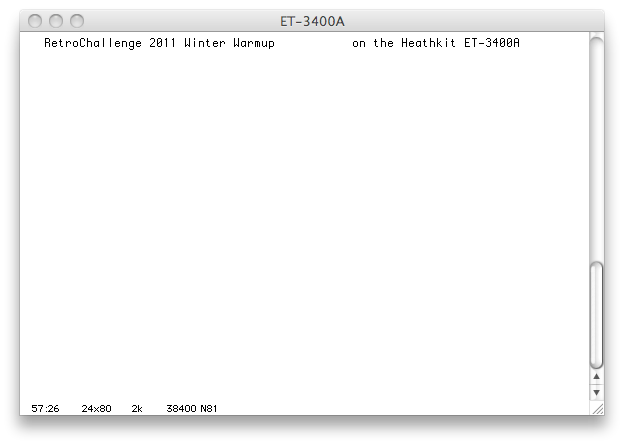

{kind=link}
{kind=link}
{kind=link}
{kind=link}
{kind=link}
{kind=link}
{kind=link}

This page describes my efforts restoring a Heathkit ET-3400 microprocessor trainer along with a similar model, a Heathkit ET-3400A. This was part of the Retrochallenge 2011 Winter Warmup that occurred from Jan 1, 2011 to Jan 31, 2011. The Retrochallenges are designed to get retrocomputing enthusiasts to actually spend time doing what they like to do: mess about with old computers.
My project was one of three winners. One winner was Paleoferrosaurus who did a nifty project stabilizing the video output from a Apple II so that it could be recorded properly on high-end video equipment. (I stole a bit of his code for my final demo.) The other winner was Aliennerd who created a new inform-based text adventure game based on the film "Silent Running." Aliennerd's game was demonstrated to be playable on at least two of the other constestant's text adventure runtime environments. Several of the entries were really quite cool and I encourage you to check out the entire array of candidates. Visit the Retrochallenge 2011 Winter Warmup page to see the other projects.
Here are some of the highlights of my project during the month-long challenge:
It turns out that I'm not actually finished messing around with these two boards. I have started a new web page for my continuing antics with the ET-3400 and ET-3400A.
While the challenge was occurring, status updates were in reverse order with newer entries at the top. However, now that the challenge is over, I have put them in chronological order so you can read from start to finish, if that's the sort of thing you like to do.
Click on any picture to see a higher resolution version.
I had been considering entering the RetroChallenge 2011 Winter Warmup "contest" for a while, but there didn't seem to be any activity around it getting organized. Then at the last minute, a volunteer (urbancamo) put it together. I've decided to commit and have sent in my entry. My goal is fairly simple:
I'm going to fix up my Heathkit ET-3400 and ET-3400A microprocessor trainers.
The contest runs from Jan 1, 2011 through Jan 31, 2011. I'll post more info on this project once the contest begins.
Okay, we're off and running. This website is still pretty bare-bones. Click on a picture for a higher-rez version of it.
The first thing I needed to do was clean up some workspace. Here's a "before" shot:
Quick list of what you see: phone, HP-41CX, 23" Cinema Display, 27" iMac (quad-i7 2.8Ghz), ipod touch, eeepc, RLX blade server with several blades in it, a vintage ISA video card, ethernet cables, dog bed. The RLX box is practically retro now, vintage is 2001 or so. It's identical to the one at the colo which is hosting my website and other stuff and I need to do a remote upgrade. It's going to be somewhat tricky so I'm using this one as a staging/test box. (That project is going to have to go on hold for a bit during the winter warmup.) If you look closely, there's a Jelly Belly jelly-bean near the wire cutters. Just thought you should know.
After shot:
Much cleaner!
Closeup of the ET-3400:
Closeup of the ET-3400A:
I'm going to start with the ET-3400. I am the original owner. My older brother and I purchased the kit in November 1977. I was 13 and he was 18. He must have been back at home from first year of college for Thanksgiving. I had plenty of experience building Heathkits at that point, so I put it together. Our dad worked for TWA and that year I travelled across the country several times with it in my carryon luggage so that I could show my bro what I had learned and fun little programs we could do on it. I definitely got more out of the ET-3400 than he did, as he had quite a bit of experience with PDP-11s and some other microprocessors already. Heathkit also had a course that went with it, the EE-3401 Individual Learning Program in Microprocessors. I went through the lessons and exercises religiously.
The ET-3400 is a small computer based around the Motorola 6800 8-bit CPU. It has 512 bytes of RAM, 1024 bytes of ROM with a simple monitor program in it, 6 seven-segment LED displays, and a hex keypad. However, the really cool things is that enough of the CPU's address, data, and control lines are exposed and there's a prototyping block available. There are 8 convenient LEDs that you can light up for whatever you want, and an 8-position dip switch for setting some other inputs. It was amazingly simple to add circuitry to the computer to try out interfacing to some new gizmo.
Many, many years ago, I was noodling around with the ET-3400 and I noticed that the "1Hz" output wasn't operating properly. This doesn't affect the operation of the computer any. It's just a signal that's provided for convenience. It's not even really 1 Hz. It's the output of a RC op-amp circuit that's "close" to 1 Hz. I remember way back that doing any serious timing with it was a mistake. For serious timing, it was better to use the 60hz signal which was based on the AC line frequency. Anyway, I've just checked by attaching a wire from the 1Hz signal to one of the handy LED inputs, and sure enough, this is still inop.
More recently, I took the unit out of storage and I tried playing with it. Unfortunately, the "1" key doesn't seem to work properly anymore. It seems like it's just not making contact. This is a show-stopper, because that's needed to change the A accumulator if you're playing with ROM monitor, and it's also needed to enter in any value that has a 1 in it. Since all input is in machine language, you just can't get very far before you need to type a "1".
Another problem is that when you open up the device, the power-supply's transformer is on the bottom case, and the main circuit board is on the top case. I've had this thing open so many times over the years that one of the wires on the transformer keeps breaking. Several times I've had to reattach it to the circuit board, each time it gets a bit shorter, making the problem worse. As you can see from this picture, it's broken again:
Note the fine soldering. It looks like it was done by a 13-year-old!
Looking at the schematic, this is part of the 12V section of the power supply. It doesn't affect the computer operation, because 12V isn't used anywhere. Like the 1Hz signal, these +12V/-12V supplies are provided as a convenience for the circuit experimentor. They're very handy if you're doing voltage conversions for serial ports (this was all before the MAX-232 type serial interfaces) or interfacing to some of those really old TI EPROMS.
I've checked the 12V and -12V external supplies and found something pretty amazing. Even with this broken red wire, I'm still getting a pretty decent 12V and -12V supply. It's a standard full-wave bridge, but 1/2 of the input it gone. I expect there's a bit of a ripple in the outputs, but I haven't hooked up a scope to them. The +12V supply is showing 12.11 VDC and .011 VAC. The -12V supply is showing -11.88 VDC and .087 VAC. Both w/ 1 Kohm load. We'll see what these values are once the red wire is reattached.
For the ET-3400, I want to do the following things:
The ET-3400's main circuit board is attached to the top half of the plastic shell. Many of the components are visible, but some are hidden behind the upper part of the shell (behind the black label with the power switch, etc.). The IC at the heart of the 1Hz signal is hidden up there.
I detached the board from the top shell and looked for IC18, the quad comparator that uses one of its comparators in the 1Hz circuit. (Oops, not an op amp that I had remembered in my earlier post, but close.)
This is what I find:
I have no idea why those pins are bent up like that. I have absolutely no recollection of doing it but it must have been me. I can think of two scenarios. Something is wrong with the quad comparator, and for some reason taking that single unit out of the circuit allows the other one to function properly. (Two of the comparators aren't used.) OR, more likely, I was messing around with RC circuits trying to get the signal closer to 1Hz. The part is a Nat Semi LM2901N. It should be a simple matter of extracting it, restoring the pins to their regular positions, and trying it out.
And while detaching the top shell, another wire from the transformer to the circuit board broke off. This time the center tap for the 5V supply. Until I get that reattached, I won't be trying out any sort of 1Hz or "1" key fixes. These tranformer wires are getting out of hand. I'm definitely going to install some sort of connector for them.
I live in a somewhat rural town, and there's not a whole lot of local choices for electronics parts. However, I did take a look in the local Radio Shack. I picked up a LM339 quad comparator and a male/female set of molex-style 6-pin power connectors. The LM339 should be a good enough replacement for the LM2901N, just in case it actually is faulty. The power connectors are going on the transformer outputs.
That's all for today. Enjoy this snapshot of my faithful assistant taking a break:
Today was my first day back at the day job this new year, plus my S.O.'s birthday. There was no time to do retrocomputing and restoration.
Since this "blog" doesn't use regular blogging software, there's no ability to leave comments. It's not that I don't want to hear from you, I just don't want to run blogging software. Therefore, I have created a special email address where you can reach me and if you'd like I'll post your comments. If you do write, be sure to specify if you want your comment posted or not. The address is rc2011ww@gc.org. Since this is out in the open, it will get harvested and get tons of spam eventually. Therefore, I'll disable it at the end of the winter warmup. After that, I can be contacted in a bunch of other ways. (It's not difficult to find out a valid email address for me. You could do a whois on me, or there's even a puzzle elsewhere on this website to find one.)
I made progress today. I'm working on the problem of the transformer wires connecting to the circuit board always breaking. I found a pretty good place to attach a molex connector on the circuit board of the ET-3400. Actually, it's the only part of the machine that could be considered a chassis. I soldered the ends of the wires on the transformer to the pins. I also soldered the pins to wires to go to the connecter on the chassis, but that side isn't done yet -- I still need to connect those wires to the circuit board itself.
Here's where the power connecter will go on the chassis:
Right now, it's attached by a zip-tie. It slides around a bit, so I may use an adhesive as well.
Inserting some pins into the connector on the transformer side:
I love that "click".
Final shot of the transformer connector:
An initial attempt to line up this connector with the other connector shows that there is enough length here to reach when everything's all assembled. I was worried about that for a moment.
Major success this evening! I finished the power connector. It's working quite well. The +12V output is: 12.14 VDC .001 VAC. The -12V output is: -11.87 VDC .086 VAC. So apparently less ripple on the +12V output and not much change on the -12V output. I can live with that. Plus, my soldering-power-wires-to-the-circuit-board days are over.
On the advice of Leo from the et-3400 group (Yahoo Groups), I put DeoxIT DN5 down the shaft of the "1" key. (Actually, Leo suggested DeoxIT D5, but DN5 was what I found in Radio Shack.) After a while of repeatedly pressing the key, it works perfectly. One key press, one "1" registers!
As for the 1Hz signal, I straightened out the pins on the LM2901N and reseated it. No go. That part is definitely faulty. I then put in my substitute LM339N, and I've got a pulse! It's a little weird, though. About 26 in one minute (~ 1/2 Hz), and the duty cycle seems to be on about 80%, off 20%. I don't recall the signal being quite that inaccurate back in the day, so maybe I'll order a 2901 from mail-order and check it out later.
So, that covers the three main problems with the ET-3400. I'll put some time into beautification, then I'm not sure if I'll dive right into the ET-3400A or play with the ET-3400 a bit. Maybe I should reconnect with my 6800 machine code days. I've forgotten all the opcodes. Back in the day I had most of them memorized.
Here's a shot of the power connector all finished. Two zip ties hold it in place quite well. The center taps off the tranformer outputs are both tied to ground, so instead of running wires over to where they used to connect, I soldered them to a lug and screwed it to the chassis. Those are the black wires.
This display, "CPU UP", is very familiar to ET-3400 owners everywhere. It does indicate that a whole lot of things are working properly:
And here's a shot of my "1"s. Look at all those ones.
I spent a little time cleaning up the ET-3400. It doesn't look new, but it does look quite a bit better now. I wasn't planning to post a picture, thinking the change wouldn't be that much when viewed on the screen. But when you compare the pic with the one from Jan 1, you really can see a difference. I also completely reassembled it, even committing to putting back all the screws in the casing.
I haven't come up with a supercool thing to hook up to my ET-3400 or some nifty little program to write. So in order to make progess, I started fixing up the ET-3400A. Almost all the keys had difficulty with not making contact or bouncing pretty bad and giving two or three "presses" for each real press. I treated each keyswitch's post to DeoxIT DN5 and let the fluid run down into the mechanism. Then after pressing all the keys quite a few times, they came to life properly. I'm quite impressed with the DeoxIT product. I also cleaned the keycaps so they're quite spiffy now.
The whole ET-3400A is dusty. It also has a strange odor to it. I purchased this unit off ebay in spring 2010. It seemed like a nice kit and had been well cared for. But it came in a suitcase-like thing made of a thin plastic, which over the years had started to break down and was quite musty. When I received the ET-3400A, the documentation that came with it (schematic, manual, and the books and tapes for the EE-3401 course), and a few parts, I immediately threw away the carrying case. It was that bad. Anyway, this odor still lingers on the unit. I'm hoping that when I get to cleaning the dust off it and wiping it down carefully, the smell goes away mostly.
I finished cleaning up the ET-3400A. I am going to declare it done now. I had been considering doing the same trick to the wires from the transformer for this one as the ET-3400, but I decided against it. First, all the wires appeared to be in good shape and none were broken. Second, the ET-3400A has a grounded 3-conductor power cord, as opposed to the ET-3400's two-conductor non-grounded power cord. In the ET-3400A, the ground wire connects to the transformer and they added a fairly beefy wire braid from there to a big ground pad on the circuit board. I would want to preserve that connection, so would need a different connector than I used on the ET-3400. Again, since there really isn't a problem here, I figured its best to leave it alone.
Here's a picture of the cleaning in progress, note the difference between the "Data I/O" section and the "Control Buffers" section.
And here is the ET-3400A, all done, assembled, ready for action:
I have started refamiliarizing myself with the 6800 and the ET-3400 from a programming point of view. I tried out a simple example from the manual which sequentially displays each segment of the 6 seven-segment LEDs. It worked, but it isn't very satisfying because I didn't write it. I just typed in a bunch of machine code.
To start, I am going to make a simple clock app. There's an example in the manual, but I don't like it because 1) It's based on the CPU clock speed and you adjust a parameter based on whether it runs fast or slow. 2) If you reset the board, the clock stops.
My improved clock program will require a very simple circuit: a single wire from the 60Hz line (based on the AC line frequency, 60Hz here in the US) to the non-maskable interrupt input. The interrupt handler will keep track of the time, and a main routine will display it. If I hit the reset button (and don't hold it down too long), the NMI will keep ticking and keeping time, so I can resume the display part later. I did some experiments with the user NMI vector and verified that the ROM monitor works just fine with the NMI ticking away.
The clock exercise was a success. It's a rudimentary 24-hour clock.
Here's what it looks like:
If you happen to look at the exif data for the picture, you'll see that it was taken at 21:28:10, yet the clock itself says 21:28:31. The heathkit clock is actually the correct one. The exif data is set from my camera's internal clock, which is apparently about 20 seconds slow.
The clock works by taking the line frequency (60Hz in the US) and feeding it into the non-maskable interrupt input. The interrupt vector for the 6800's NMI is in the ROM, but fortunately the authors of the ET-3400 ROM monitor were kind enough to point that vector to a place in RAM, so that experimentors like me can attach to it. The NMI handler does all the math of incrementing the HZ tick count, then seconds, then minutes, then hours appropriately if there's a rollover. I keep the time values in BCD because it's just easier to input the time and for displaying, I can just call a ROM monitor routine to chuck three hex bytes out to the displays. To set the time, I just edit the values in RAM. I can even do this while the ticks are running.
A more correct way would have been to keep the interrupt handler as small and quick as possible. That would mean to have the tick increment a value, roll it over at 60*60*60*24. The display routine would have to be more complicated, taking the tick value from the start of the day, dividing and getting remainders for the seconds, minutes, hours. The 6800 doesn't have a divide instruction and at this point I'm too lazy to write one or dig one up. Plus setting the time would require more code, because editing the raw counter value would be a pain.
Here's the code. If you notice any syntax errors and wonder how on earth I got it to assemble, the answer is that this was hand-assembled. Before I go find an assembler for 6800 that I can work with, I though it would be therapeutic to generate the machine code by hand just once. It really helped me refamiliarize with the 6800 architecture and limitations.
org 0 disploop: 0000 bd fc bc jsr redis // reset dig ptr to leftmost 0003 c6 03 ldab #3 0005 ce 01 00 ldx #hr 0008 bd fd 7b jsr dsplay // display 3 bytes 000b 3e wai 000c 7e 00 00 jmp disploop 00fd org $00fd // nmi user vector 00fd 7e 01 08 jmp tick 0100 org $100 0100 00 hr db 0 // populate these w/ current 0101 00 min db 0 // time in BCD 0102 00 sec db 0 0103 00 hz db 0 0104 24 hrmax db $24 0105 60 minmax db $60 0106 60 secmax db $60 0107 60 hzmax db $60 tick: 0108 ce 01 03 ldx #hz // start with the hz value 010b c6 04 ldab #4 // 4 values to increment loop: 010d a6 00 ldaa (x+0) // get value 010f 8b 01 adda #1 // increment and decimal adjust 0111 19 daa 0112 a1 04 cmpa (x+4) // compare to its roll-over value 0114 27 04 beq roll 0116 a7 00 staa (x+0) // no roll, save it and get out 0118 20 06 bra done roll: 011a 6f 00 clr (x+0) // roll, clear this value 011c 09 dex // go to next value 011d 5a decb // finished last value? 011e 26 ed bne loop done: 0120 3b rti
The NMI ISR (at 0108) runs through a loop incrementing tick counts, seconds, minutes, or hours. The appropriate roll-over values are kept in an array right after the time values, and the ISR uses the index register to access the time value (x) or its rollover value (x+4). In the 6800, the decimal adjust is the BCD magic to keep these values looking like decimal. I have to add 1 using the add instruction because the daa command doesn't work after a simple increment.
The display portion of the program at 0000 makes use of two routines in the ET-3400's ROM monitor. There's a display pointer keeping track of which LED to write to next, and a display routine with dumps a bunch of bytes onto the displays, translating them from their hex values to the special display codes for the 7-segments.
Note to any ET-3400 users out there who are trying this. Do not connect the wire from the Line output to the NMI input until after you have finished entering the program, or at least the ISR part from 00fd through 0120.
I'm going to leave my clock running for a day or so, just to see how it goes.
I didn't want to get too obsessed with the clock program because it was supposed to be just a warmup for something more interesting. However I noticed this morning that the time on the clock wasn't quite right. It had drifted from the clock I set it to the night before. In fact, last night it seemed it had gone fast then this morning too slow. Not by much, only a fraction of a second difference after several hours, I'm quite confused about this. I then realized that the reference clock was the clock in the corner of my iMac, and that might drift and get corrected by NTP at who-knows-when intervals. So I started to compare it to the clock display in a Garmin GPS. The Heathkit clock was definitely going too fast for the period I was watching it.
I'm now running a very simple timing test to ensure that my 60hz signal is really 60hz. The ISR is simply bumping up a 32-bit counter. I noted the time (on the GPS) when I started it. I'll let it run overnight and note the time I stop it by pulling the wire to the NMI. I should be able to calculate exactly how many ticks there were, plus or minus about 20. If I see more error than that, then I'll know that the 60hz signal isn't to be trusted and simply move on. If the 60hz signal is trustworthy, then I don't know what I'll do.
I have considered the possibility that the interrupt service routine is taking too long and not completing before it's invoked again. That would be bad, as the code is definitely not reentrant-safe. Usually, you don't worry about these things because the speed of the cpu is orders of magnitude faster than a huge 1/60 of a second. But is it in this case? I honestly don't know yet. I don't know the exact speed of my cpu, nor have I calculated how long the ISR takes in the worst-case scenario when the hours roll over. When I'm done testing the speed of the 60hz line, I'll do an experiment to determine the clock speed of my 6800. On the ET-3400, the clock circuit is driven by an RC circuit, not by a crystal oscillator. So there's always a bit of variation from one unit to the next.
In the meantime, I have located and built the "asl" assembler on my Mac. This is one amazing piece of software. It can assemble code for dozens of different cpus. (Right now I'm interested in the 6800 but I've got dozens of future projects on other micros.) I managed to convert my clock program to its syntax without too much modification!
The listing looks like this:
AS V1.41r8 - source file clock.asm - page 1 - 1/12/2011 22:22:12
1/ 0 : =$fcbc redis equ $fcbc
2/ 0 : =$fd7b dsplay equ $fd7b
3/ 0 :
4/ 0 : org 0
5/ 0 : disploop:
6/ 0 : bd fc bc jsr redis ; reset dig ptr to leftmost
7/ 3 : c6 03 ldab #3
8/ 5 : ce 01 00 ldx #hr
9/ 8 : bd fd 7b jsr dsplay ; display 3 bytes
10/ b : 3e wai
11/ c : 7e 00 00 jmp disploop
12/ f :
13/ f :
14/ f :
15/ fd : org $00fd ; nmi user vector
16/ fd : 7e 01 08 jmp tick
17/ 100 :
18/ 100 :
19/ 100 : org $100
20/ 100 :
21/ 100 : 00 hr: byt 0 ; populate these w/ current
22/ 101 : 00 min: byt 0 ; time in BCD
23/ 102 : 00 sec: byt 0
24/ 103 : 00 hz: byt 0
25/ 104 : 24 hrmax: byt $24
26/ 105 : 60 minmax: byt $60
27/ 106 : 60 secmax: byt $60
28/ 107 : 60 hzmax: byt $60
29/ 108 :
30/ 108 : tick:
31/ 108 : ce 01 03 ldx #hz ; start with the hz value
32/ 10b : c6 04 ldab #4 ; 4 values to increment
33/ 10d : loop:
34/ 10d : a6 00 ldaa 0,x ; get value
35/ 10f : 8b 01 adda #1 ; increment and decimal adjust
36/ 111 : 19 daa
37/ 112 : a1 04 cmpa 4,x ; compare to its roll-over value
38/ 114 : 27 04 beq roll
39/ 116 : a7 00 staa 0,x ; no roll, save it and get out
40/ 118 : 20 06 bra done
41/ 11a : roll:
42/ 11a : 6f 00 clr 0,x ; roll, clear this value
43/ 11c : 09 dex ; go to next value
44/ 11d : 5a decb ; finished last value?
45/ 11e : 26 ed bne loop
46/ 120 : done:
47/ 120 : 3b rti
48/ 121 :
This will really help with the experiments. Funny, I never used an assembler back in the day. I just hand-assembled everything. Now I don't seem to have the patience for it. I'll probably also start working on some faster way to load these programs into memory rather than keying them in.
I let the 60hz-NMI counter run for 19 hours. I was expecting somewhere around 4104000 ticks. I got 4104047 ticks. That's about 3/4 of a second gain in 19 hours. Some of that is can be explained away with perhaps sloppy human start/stop actions, but probably not 3/4 of a second. For now, I'm just going to say that the 60hz signal isn't good enough by itself for time keeping. I should probably let the thing run for a week to know for sure what the drift is on the "60hz" line, but that will have to wait. I want to do other stuff on the ET-3400.
I was curious what the clock speed or cycle time is on my ET-3400. So I did a test that counts. After a set time, I stop the count and see where it is.
AS V1.41r8 - source file countup.asm - page 1 - 1/13/2011 22:37:11
1/ 0 : org 0
2/ 0 :
3/ 0 : 4f clra
4/ 1 : 97 30 staa hi
5/ 3 : 97 31 staa hi+1
6/ 5 : 97 32 staa lo
7/ 7 : 97 33 staa lo+1
8/ 9 : tick:
9/ 9 : de 32 ldx lo ; 4
10/ b : 08 inx ; 4
11/ c : df 32 stx lo ; 4
12/ e : 27 08 beq dohi ; 4
13/ 10 : 01 nop ; 2
14/ 11 : 01 nop ; 2
15/ 12 : 01 nop ; 2
16/ 13 : 01 nop ; 2
17/ 14 : 01 nop ; 2
18/ 15 : 01 nop ; 2
19/ 16 : 20 f1 bra tick ; 4
20/ 18 : dohi:
21/ 18 : de 30 ldx hi ; 4
22/ 1a : 08 inx ; 4
23/ 1b : df 30 stx hi ; 4
24/ 1d : 20 ea bra tick ; 4
25/ 1f :
26/ 30 : org $30
27/ 30 :
28/ 30 : 00 00 hi: fdb 0
29/ 32 : 00 00 lo: fdb 0
30/ 34 :
The comments are the number of cpu cycles that each instruction takes. I keep the count in a 32-bit value, so there's a branch to increment the upper half of the value. But doing that would affect the duration of the loop. I added "nop" instructions to the non-branching path to even out the duration. The loop time is constant regardless of whether the upper half of the value is incremented or not.
On the ET-3400, I got 576670 loops in 420 seconds. That's 12563.5 loops/sec. At 32 cpu cycles per loop, that gives 402032 cycles/sec. I recall something about the cpu cycle being 1/2 the cpu frequency. So, this is about right.
On the ET-3400A, I got 7263338 loops in 240 seconds. That results in 968445 cycles/sec. About twice as fast as the ET-3400. That sounds about right.
I didn't calculate the time of the NMI ISR routine in the clock program, but I definitely wasn't exceeding 6700 cycles (1/60th of a second) to execute that routine. So that wasn't the issue. It was just the inaccuracy of the 60hz signal.
I figure I'm done messing about with timing. My next goal is to make it so I can write slightly longer programs and get them into the machines without having to key them in by hand. I want to wire up a serial port and feed the output of the asl assembler directly to the machine. Step 1 is locating the parts I'll need. I know I've got the official Mot 6850 "ACIA" (Asyncronous Communications Interface Adapter) around here somewhere. Here's a picture of the mess I made looking for the parts:
I found a 6850. This was the one that originally came with the Heathkit EE-3402 Microprocessor Interfacing course I purchased a few years after my initial encounter with the ET-3400. I found a second 6850 which I don't remember acquiring, but it's definitely different. It's a ceramic chip, instead of the familiar plastic. I don't know if it works. It would be good to have two. I could hook one to each of the boards. OR, I'm likely to have both on the ET-3400A (which has 2x the memory for a total of 1k bytes!). With two serial ports, I could have one connected to the Mac for downloading programs, and one connected to my next trick. Which is ...
I dusted off (literally!) an HP 7475A pen plotter that I've been carrying around for years. I rescued this from a hallway pile of junk-to-be-thrown-out at IBM Boca Raton in 1992. Soon after I rescued it, I had to purchase a pen carousel and manuals. Every few years, I buy a batch of pens thinking I'm going to do something with this plotter. From the last batch, I have 8 working pens. I've got some colors, but the black ones are all dried up. HP doesn't sell pens for these any more, but there are other suppliers. I'd like to connect the plotter to the ET-3400A and plot something nice.
I have located some more parts for the upcoming serial interface. I found a 74LS138 TTL demuxer and a MC1489 RS232-to-TTL level converter amongst my pile of parts. I didn't find a MC1488, so this will be a receive-only serial interface for a while until I find a 1488. I went to Fry's today in Sacramento and picked up a couple male db9 connectors. I'll solder a few wires onto one and connect to a USB-serial port on the Mac.
I'll build the serial interface circuit tomorrow. I haven't figured out yet what clock frequency it'll need, but I've got a bunch of clock oscillator components. One of them should do the trick.
We have a serial port! I wired up the 6850 ACIA and did some testing. I spent quite a while thinking the whole thing was broken when I could not get any data on the transmit line. I then continued testing everything else which all works just fine. I must have fried the transmitter output at some point in the past on this chip. However, I just decided to focus on the current goal which is to get a serial port that receives so I can download programs easier. The interface is receiving data from my Mac quite well.
Here's a picture:
On the proto board on the main unit is the MC1488 level converter, the 6850 ACIA, a 74LS138 3-to-8 demux, and a 7410 triple-input nand gate. On the lower proto board is my clock circuit: a 7404 with a 5.0Mhz crystal and some resistors, and a 7473 flipflop to divide the signal down by 2. To the left is the db9 connected to a USB-serial adapter which goes to the Mac. The demux is connected to Address lines A15 through A10. The 0th output lights up at address 2000h, the 1st output at 2400h, etc. I have the ACIA mapped at 2000h. The 7410 is for glue logic. On this computer, the data lines are available, but they're protected by a directional buffer. That directional control is turned on and off by the "RE-" signal way at the top of the board. We wouldn't need this if we were hooked right into the data bus, but here on the outside we need some glue to set the direction of the external data bus.
The clock frequency was a bit of a challenge. I didn't have such a large selection of crystals and crystal oscillators as I had thought. The 6850 ACIA can take the input clock and divide it by 1, 16, or 64. I found a 5Mhz crystal, set up the circuit for it, and divide it by two. If I set up the ACAI to divide by 64, then I get 5.0Mhz / 2 / 64 = 39062.5, which is only 1.7% different from 38400 baud. It's not great, but it's close enough. I did find a 6.144 Mhz crystal, which when divided by 10, and then use the /16 in the ACIA would give 38400 exactly. Unfortunately, I don't have the right part hanging around to divide by 10.
The program is quite simple:
AS V1.41r8 - source file serbytes.asm - page 1 - 1/15/2011 22:19:31
1/ 0 : =$fcbc redis equ $fcbc
2/ 0 : =$fe20 outbyt equ $fe20
3/ 0 :
4/ 0 : =$2000 sercsr equ $2000
5/ 0 : =$2001 serdata equ $2001
6/ 0 :
7/ 0 : org 0
8/ 0 : 86 03 ldaa #3 ; code to reset ACIA
9/ 2 : b7 20 00 staa sercsr
10/ 5 : 86 16 ldaa #$16 ; interrupts off, 8N1, div by 64
11/ 7 : b7 20 00 staa sercsr
12/ a : inloop:
13/ a : b6 20 00 ldaa sercsr ; check for byte received
14/ d : 84 01 anda #1
15/ f : 27 f9 beq inloop
16/ 11 : b6 20 01 ldaa serdata ; retrieve received byte
17/ 14 : bd fc bc jsr redis ; reset display pointer
18/ 17 : bd fe 20 jsr outbyt ; show received byte on left two LEDs
19/ 1a :
20/ 1a : 20 ee bra inloop
21/ 1c :
What you see on the display is hex 30. I had just pressed a "0" in my zterm program on the Mac.
I didn't get as far today as I would have liked. I was hoping to get to the point where I could download the ouput of the assembler on the Mac to the ET-3400A. I've got all the pieces working, but there's a bit of programming to do.
I go on business travel tomorrow and won't be back until Friday so I probably won't be able to work on the project until then. While I'm away, I may try to find a free circuit drawing program so I can show what's really going on with the serial port circuit in the picture above.
I'm out of town and not able to play with my boards, but I've been learning what I can about the asl assembler. I'm preparing for when I return and start wanting to download assembled output directly to the ET-3400A. asl output is in a "p" file which is not straight binary output. Because asl is an assembler for multiple processors, the p files have all sorts of information in them that I don't want. There is a p2hex program that can convert the raw output to a variety of formats, including Motorola S records. However, one goal for my downloading project is the receiving program has to be dead simple because that part I'm going to have to key in by hand every time I unplug the board. I may end up using the p2bin program instead. That is intended for preparing p files to be burned to eproms.
I've been wondering what my options are in getting some sort of free C compiler working for the 6800 board. It turns out that I'm at a company meeting where that are at least 2 dozen very smart gcc compiler engineers. I got plenty of suggestions: Small C, LCC, and SDCC. I took a look at these and I think I'll try to give SDCC a whirl. It builds on MacOS X (in fact, they even deliver a binary for MacOS X). It also targets a few 8-bit cpus, one of which is 68HC08. Off-hand, I don't recall how different the 68HC08 is from the 6800 that's on my boards, but even if it's not the same, I might be able to hack on the compiler to retarget it for 6800.
I'm still out of town. I played around with the sdcc C compiler a bit. It can target the 68hc08, however that's not going to be much help. After doing some research, I found that the hc08 is similar to the 6800, but there are enough differences that make any code for the hc08 unusable on a 6800. sdcc is definitely a cool package, though. There is a compiler, assembler, linker, and simulator. It is possible to retarget the compiler to the 6800 which I hope to do someday, but that's going to be a much bigger effort than I want to get involved with during this winter warmup.
For high-level-like programming, I will be using the macro capabilities in the asl assembler. I don't have a running version of asl with me, but I've been looking at the documentation in preparation for my return to et-3400 civilization.
I'm back at home and hacking away on the serial downloader project. I rearranged the circuit a bit so that received characters issue an interrupt that goes to the NMI on the ET-3400A. I adjusted the program to match. I was then playing around with asl's p2hex program to generate the files suitable to download to the ET-3400A. The p2hex program can produce Motorola S records or Intel hex format. Although I'm using a Motorola 6800, I planned to use Intel hex format because it's simpler. For example, the output of my "countup" program the other day looks like this in S records:
S0030000FC S5030001FB S12200004F9730973197329733DE3208DF32270801010101010120F1DE3008DF3020EACE S5030001FB S107003000000000C8 S9030000FC
And this in Intel hex:
:1F0000004F9730973197329733DE3208DF32270801010101010120F1DE3008DF3020EAD2 :0400300000000000CC
It's just a colon, length, address, zero-byte, data, and checksum. There's too much additional junk I don't need in the S records format.
I started writing a parser for the Intel hex format in 6800 assembly language, looking for digits, A-F, colons, keeping track of nybbles, byte counts, etc. Things were going well but it didn't take too long before it was at 200 bytes. And it's only about 1/2 done. Well, I just don't have a whole lot of usable memory in these things (197+256 bytes in the ET-3400, and an additional 512 bytes in the ET-3400A). I don't want to spend that much of it on a downloader for two reasons. The downloader is the part that I have to key in manually and it wouldn't leave much room for "real" programs.
I'm now thinking of going with a very simple downloader. No parsing. Just grab sets of [address, count, data...]... I've got an 8-bit-clean serial port, so it'll be two chars for address, one for count, and one each for the data bytes. It will require a preparation program on my iMac development host, but that should be pretty easy. This will have to be tomorrow's goal.
I finished the simple downloader and it's working pretty well. It sits in memory and the NMI from the serial port invokes an interrupt service routine (ISR) which reads address, length, and data bytes. Then it repeats waiting for another set of address, length, and data bytes. The routine has to keep a "state" byte to know where it is in the sequence so that when the ISR is invoked again, it knows where it was in the sequence.
I use a couple assembler features. The ENUM pseudo-op is a straightforward method to assign constant values to symbols. I also use a simple macro called "irp" which iterates over parameters to generate some code. Here's the listing:
AS V1.41r8 - source file rcvbytes.asm - page 1 - 1/22/2011 13:08:31
1/ 0 : PAGE 0
2/ 0 :
3/ 0 : =$fcbc redis equ $fcbc
4/ 0 : =$fe20 outbyt equ $fe20
5/ 0 :
6/ 0 : =$2000 sercsr equ $2000
7/ 0 : =$2001 serdata equ $2001
8/ 0 :
9/ 0 : =$0..$3 ENUM ready, addrhi, addrlo, len
10/ fd : org $fd
11/ fd : 7e 01 98 jmp rxint
12/ 100 :
13/ 180 : org $180
14/ 180 : 20 04 bra start
15/ 182 :
16/ 182 : 00 state: fcb 0 ; what state parser is in
17/ 183 : 00 count: fcb 0 ; how many bytes to receive
18/ 184 : 00 00 addr: fdb 0 ; current address
19/ 186 :
20/ 186 : start:
21/ 186 : 86 00 ldaa #ready
22/ 188 : b7 01 82 staa state
23/ 18b :
24/ 18b : 86 03 ldaa #3 ; ACIA master reset
25/ 18d : b7 20 00 staa sercsr
26/ 190 : 86 96 ldaa #$96 ; rxint on, rts- low, txint off, 8N1, div by 64
27/ 192 : b7 20 00 staa sercsr
28/ 195 : end:
29/ 195 : 3e wai
30/ 196 : 20 fd bra end
31/ 198 :
32/ 198 : rxint:
33/ 198 : f6 20 01 ldab serdata ; retrieve received byte
34/ 19b : b6 01 82 ldaa state
35/ 19e :
36/ 19e : irp state, ready, addrhi, addrlo, len
37/ 19e : cmpa #state
38/ 19e : beq do_state
39/ 19e : endm
37/ 19e : 81 00 cmpa #READY
38/ 1a0 : 27 0e beq do_READY
37/ 1a2 : 81 01 cmpa #ADDRHI
38/ 1a4 : 27 11 beq do_ADDRHI
37/ 1a6 : 81 02 cmpa #ADDRLO
38/ 1a8 : 27 14 beq do_ADDRLO
37/ 1aa : 81 03 cmpa #LEN
38/ 1ac : 27 17 beq do_LEN
40/ 1ae :
41/ 1ae : 20 28 bra rxintdone
42/ 1b0 :
43/ 1b0 : do_ready:
44/ 1b0 : f7 01 84 stab addr
45/ 1b3 : 86 01 ldaa #addrhi
46/ 1b5 : 20 1e bra newstate
47/ 1b7 :
48/ 1b7 : do_addrhi:
49/ 1b7 : f7 01 85 stab addr+1
50/ 1ba : 86 02 ldaa #addrlo
51/ 1bc : 20 17 bra newstate
52/ 1be :
53/ 1be : do_addrlo:
54/ 1be : f7 01 83 stab count
55/ 1c1 : 86 03 ldaa #len
56/ 1c3 : 20 10 bra newstate
57/ 1c5 :
58/ 1c5 : do_len:
59/ 1c5 : fe 01 84 ldx addr
60/ 1c8 : e7 00 stab 0,x
61/ 1ca : 08 inx
62/ 1cb : ff 01 84 stx addr
63/ 1ce : 7a 01 83 dec count
64/ 1d1 : 26 05 bne rxintdone
65/ 1d3 : 86 00 ldaa #ready
66/ 1d5 : ; bra newstate
67/ 1d5 :
68/ 1d5 : newstate:
69/ 1d5 : b7 01 82 staa state
70/ 1d8 :
71/ 1d8 : rxintdone:
72/ 1d8 : 3b rti
73/ 1d9 :
There are a few more efficiencies I could take with the state handling, decrementing instead of comparing, etc. I may do that, because this part of the program needs to be keyed in manually, so every byte saved helps.
So, here's a little sample program copied verbatim from the Heathkit Manual for the Microprocessor Trainer ET-3400 page 55. It goes through a loop displaying all the segments on the LEDs. I've edited it so the syntax matches my assembler, but other than that it is unmodified.
AS V1.41r8 - source file sample1.asm - page 1 - 1/22/2011 13:26:02
1/ 0 : ; Sample 1
2/ 0 : ; Turn on and off each segment in
3/ 0 : ; sequence beginning at H display
4/ 0 : ; Uses monitor subroutines REDIS and OUTCH
5/ 0 : ; Note: One dp in each display is active
6/ 0 :
7/ 0 : =$fcbc redis equ $fcbc
8/ 0 : =$fe20 outbyt equ $fe20
9/ 0 : =$fe3a outch equ $fe3a
10/ 0 : =$f0 digadd equ $f0
11/ 0 :
12/ 0 : bd fc bc start jsr redis ; set up first display address
13/ 3 : 86 01 ldaa #$01 ; first segment code
14/ 5 : 20 07 bra out
15/ 7 : d6 f1 same ldab digadd+1 ; fix display address
16/ 9 : cb 10 addb #$10 ; for next segment
17/ b : d7 f1 stab digadd+1
18/ d : 48 asla ; next segment code
19/ e : bd fe 3a out jsr outch ; output segment
20/ 11 : ce 2f 00 ldx #$2f00 ; time to wait
21/ 14 : 09 wait dex
22/ 15 : 26 fd bne wait ; time out yet?
23/ 17 : 16 tab
24/ 18 : 5d tstb ; last segment this display?
25/ 19 : 26 ec bne same ; next segment
26/ 1b : 86 01 ldaa #$01 ; reset segment code
27/ 1d : de f0 ldx digadd ; next display
28/ 1f : 8c c1 0f cpx #$c10f ; last display yet?
29/ 22 : 26 ea bne out
30/ 24 : 20 da bra start ; do again
31/ 26 :
And here is its generated code in Intel Hex format:
:10000000BDFCBC86012007D6F1CB10D7F148BDFE60 :100010003ACE2F000926FD165D26EC8601DEF08C17 :06002000C10F26EA20DA00 :00000001FF
I wrote a program to convert this format into a file that has just address, length, and data bytes in it. I wrote it in C, which isn't the greatest language for easy string manipulation, but it's the "hammer" I've got handy in my toolbox. If you want to look at it, it's called ihextoxfr.c. Comments are pretty sparse at this point, but it loops through the lines of the intel hex format, digesting the ascii hex digits and figuring out their values. Then for each line it spits out the address, length, and data bytes in binary. These will be sent directly down the serial port to the ET-3400A.
Here's what the output of the ihex2xfr program looks like when shown through hexdump.
$ ihextoxfr < sample1.hex > sample1.xfr $ hexdump sample1.xfr 0000000 00 00 10 bd fc bc 86 01 20 07 d6 f1 cb 10 d7 f1 0000010 48 bd fe 00 10 10 3a ce 2f 00 09 26 fd 16 5d 26 0000020 ec 86 01 de f0 8c 00 20 06 c1 0f 26 ea 20 da 000002f
So you can see the first line of intel hex has an address 0000, 10h bytes, and then the data bytes starting with "bd" and ending with "fe".
This ".xfr" file is then sent down the serial port using the "Send Text" mechanism of the Zterm serial program I'm using on the Mac.
I made a movie:
We've got a week left in the challenge. It's time to start really doing something! Sure, I've got my ET-3400 and ET-3400A repaired and cleaned up. I got a nice cross-development environment going on the ET-3400A. Although that seemed pretty cool to me because it will speed up my development, it is not actually cool to anyone else, except maybe the random ET-3400 owner who might wander by. It's just an enabler for cool. Real cool is still to come, I hope.
With the remaining time, I would like to do at least one pure software project on the ET-3400A. I haven't decided what, yet, but I'm sure something will come up. However, with just over 300 bytes of ram to work with, it will be a challenge. I mistakenly thought that the ET-3400A had more memory than the ET-3400. This was a reasonable assumption, since the ET-3400A has 2x 2114 static ram parts yielding 1k, whereas the ET-3400 has 4x 2112 static ram parts yielding 512 bytes. Unfortunately, the ET-3400A was designed to be an updated version of the ET-3400, so the upper half of the 1k isn't available. (I found this out after keying in a program to 0x200, only to find it wasn't there. A quick check of the ET-3400A schematic and sure enough, the address logic is for 512 bytes only, and A9 on the 2114's is grounded.)
I'd also like to do some nifty hardware things. You might recall I mentioned a HP 7475A plotter. You might also recall that the transmit data line on my 6850 UART is inoperative. I made several attempts to get it going yesterday, but it just won't budge. I'm pretty sure it's broken. I could order a new 6850 off ebay or from Jameco or something like that, but it probably wouldn't arrive in time unless I pay for expedited shipping. I'm too cheap. I will probably order a replacement eventually, but after the winter warmup is over. Currently, I do have a working "RTS" output line, so I could twiddle the signal manually at the correct rate to transmit characters to the plotter.
I have also dug up an Optrex DMC-40218 2-line by 40-character LCD module that I picked up about 20 years ago. I had never tried to get it work before, so I had no idea if it was functional or not. Yesterday, I did manage to find the operating instructions for it on the internet. Today, I rearranged my interface circuit a bit, checked to ensure the serial port was still working, and then spent about 2 hours figuring out why the serial port wasn't working anymore. It turns out I had borked it yesterday with my experiments to get the transmitter going.
Now that is all sorted out, the basic interface to the LCD seems to be functional. There's quite a bit of controlling to it, and I haven't quite mastered it yet. I did manage to get a "hello" to display once simply by manually poking at the control and data registers, but haven't done any programming to it yet.
Here's what it looks like:
I've got the LCD figured out. You send various things to a control register, then send the display data to the data register. Once I figured out the right bits to set in the control register, it came together nicely. There are some nifty features such as quickly scrolling the characters on the display left or right. There are also 8 loadable character slots, so you can make your own character patterns.
Here's the program that displayed that:
AS V1.41r8 - source file lcd_demo1.asm - page 1 - 1/25/2011 22:28:56
1/ 0 : PAGE 0
2/ 0 :
3/ 0 :
4/ 0 : =$2400 lcdctl equ $2400
5/ 0 : =$2401 lcddata equ $2401
6/ 0 :
7/ 0 : org 0
8/ 0 :
9/ 0 : 20 48 bra start
10/ 2 :
11/ 2 : chardata:
12/ 2 : ; ----------------------------------------
13/ 2 : 20 20 20 52 65 74 fcb " RetroChallenge 2011 Winter Warmup "
72 6f 43 68 61 6c
6c 65 6e 67 65 20
32 30 31 31 20 57
69 6e 74 65 72 20
57 61 72 6d 75 70
20 20 20 20
14/ 2a : 20 20 20 20 20 20 fcb " on the Heathkit ET-3400A"
20 6f 6e 20 74 68
65 20 48 65 61 74
68 6b 69 74 20 45
54 2d 33 34 30 30
41
15/ 49 : ; ----------------------------------------
16/ 49 : 00 fcb 0
17/ 4a :
18/ 4a : start:
19/ 4a : 86 38 ldaa #$38 ; 8bit interface, 2-line display, 5x7 chars
20/ 4c : 8d 1c bsr sendctl
21/ 4e :
22/ 4e : 86 01 ldaa #$1 ; clear display
23/ 50 : 8d 18 bsr sendctl
24/ 52 :
25/ 52 :
26/ 52 : 86 0c ldaa #$0c ; display on, cursor off, blink off
27/ 54 : 8d 14 bsr sendctl
28/ 56 :
29/ 56 : ce 00 02 ldx #chardata
30/ 59 : 8d 03 bsr display
31/ 5b :
32/ 5b : done:
33/ 5b : 3e wai
34/ 5c : 20 fd bra done
35/ 5e :
36/ 5e : display:
37/ 5e : 36 psha
38/ 5f : display_lp:
39/ 5f : a6 00 ldaa 0,x ; get char to display
40/ 61 : 27 05 beq display_done ; check for zero byte at end of string
41/ 63 : 8d 12 bsr senddata
42/ 65 : 08 inx ; point to next char
43/ 66 : 20 f7 bra display_lp
44/ 68 : display_done:
45/ 68 : 32 pula
46/ 69 : 39 rts
47/ 6a :
48/ 6a : sendctl:
49/ 6a : 36 psha
50/ 6b : sendclp:
51/ 6b : b6 24 00 ldaa lcdctl ; check for busy bit
52/ 6e : 84 80 anda #$80
53/ 70 : 26 f9 bne sendclp
54/ 72 : 32 pula
55/ 73 : b7 24 00 staa lcdctl ; send value to control register
56/ 76 : 39 rts
57/ 77 :
58/ 77 : senddata:
59/ 77 : 36 psha
60/ 78 : senddlp:
61/ 78 : b6 24 00 ldaa lcdctl ; check for busy bit
62/ 7b : 84 80 anda #$80
63/ 7d : 26 f9 bne senddlp
64/ 7f : 32 pula
65/ 80 : b7 24 01 staa lcddata ; send value to data register
66/ 83 : 39 rts
67/ 84 :
After getting the LCD going and putting up the sample display, I realized two things:
1) I don't like having the downloader running in the background. Any time I've got Zterm running on the Mac, if I accidentally hit some keys in that program, they get sent to the ET-3400A and the downloader starts interpreting them as address, length, etc. Also, because the ISR had to save the state of where in the byte stream it was, I was never sure that it was in the proper state to just start using again (waiting for an address). So I was often resetting and running the init routine in it anyway. Additionally, I think I'd like to use the serial port to receive some data other than downloaded code. For instance, I can get keyboard input from my Mac's keyboard to the ET-3400A over the serial port quite nicely. So, I have disabled the NMI from the serial port and now go with polling. The program doesn't have to keep track of downloading state, and the downloader is much simpler now. As an added bonus, when I have to key it in manually, it goes quicker because it's shorter than before.
AS V1.41r8 - source file rcvsimple.asm - page 1 - 1/26/2011 22:19:33
1/ 0 : PAGE 0
2/ 0 :
3/ 0 : =$fcbc redis equ $fcbc
4/ 0 : =$fe20 outbyt equ $fe20
5/ 0 :
6/ 0 : =$2000 sercsr equ $2000
7/ 0 : =$2001 serdata equ $2001
8/ 0 :
9/ 80 : org $0080
10/ 80 : start:
11/ 80 :
12/ 80 : 86 03 ldaa #3 ; ACIA master reset
13/ 82 : b7 20 00 staa sercsr
14/ 85 : 86 16 ldaa #$16 ; rxint off, rts- low, txint off, 8N1, div by 64
15/ 87 : b7 20 00 staa sercsr
16/ 8a :
17/ 8a : getaddr:
18/ 8a : 8d 15 bsr getbyte ; get two address bytes
19/ 8c : 97 ac staa temp
20/ 8e : 8d 11 bsr getbyte
21/ 90 : 97 ad staa temp+1
22/ 92 : de ac ldx temp ; hold in index register
23/ 94 : getlen:
24/ 94 : 8d 0b bsr getbyte ; get length byte
25/ 96 : 16 tab ; hold in accumulator b
26/ 97 :
27/ 97 : bytelp:
28/ 97 : 8d 08 bsr getbyte ; get a data bytes
29/ 99 : a7 00 staa 0,x ; save it at current address
30/ 9b : 08 inx ; point to next address
31/ 9c : 5a decb ; loop while count > 0
32/ 9d : 26 f8 bne bytelp
33/ 9f :
34/ 9f : 20 e9 bra getaddr ; go back to waiting for address byte
35/ a1 :
36/ a1 : getbyte:
37/ a1 : b6 20 00 ldaa sercsr ; retrieve status register
38/ a4 : 84 01 anda #$01 ; check for character received
39/ a6 : 27 f9 beq getbyte
40/ a8 : b6 20 01 ldaa serdata ; read received character
41/ ab : 39 rts
42/ ac :
43/ ac : 00 00 temp: fdb 0
44/ ae :
45 fewer bytes to key in.
2) I'm starting to feel confined in the mere 256+197 bytes of memory. (59 bytes are used by the monitor ROM.) I wanted to do some animations on the LCD and quickly ran out of memory when I was coding it. I have therefore added to my frankenstein mess and added 2K of memory. I had four 2114 1k-by-4bit static ram parts hanging around. So, with more wire, a little more glue logic, and those 2114's, I've got 2K more RAM. It's contiguous, too, from 2800-2FFF. If I do this 61439 more times, I'll have 120M, just like the nice maxed-out DECstation I saw recently.
But seriously, 2k is really quite a luxury in this environment. Here's a picture of the monster in its current form:
The memory board is at the top. The ET-3400A is running a program that takes keys over the serial port and dumps them to the LCD. It shows the hex value of the last key on the LEDs at the top. Here's the code. There are some extra routines that are currently unused in this program. That's not a problem now since I've got all this memory and a nice downloader now!
AS V1.41r8 - source file typeme.asm - page 1 - 1/27/2011 21:56:32
1/ 0 : PAGE 0
2/ 0 :
3/ 0 :
4/ 0 : =$2000 sercsr equ $2000
5/ 0 : =$2001 serdata equ $2001
6/ 0 : =$2400 lcdctl equ $2400
7/ 0 : =$2401 lcddata equ $2401
8/ 0 :
9/ 0 : =$fcbc redis equ $fcbc
10/ 0 : =$fe20 outbyt equ $fe20
11/ 0 :
12/ 2800 : org $2800
13/ 2800 :
14/ 2800 : 8d 3e bsr initlcd
15/ 2802 : 8d 49 bsr initser
16/ 2804 :
17/ 2804 : loop:
18/ 2804 : 8d 52 bsr getbyte
19/ 2806 : bd fc bc jsr redis
20/ 2809 : bd fe 20 jsr outbyt
21/ 280c : 81 08 cmpa #$08
22/ 280e : 27 04 beq bs
23/ 2810 : 8d 21 bsr senddata
24/ 2812 : 20 f0 bra loop
25/ 2814 : bs:
26/ 2814 : 86 10 ldaa #$10
27/ 2816 : 8d 0e bsr sendctl
28/ 2818 : 20 ea bra loop
29/ 281a :
30/ 281a : display:
31/ 281a : 36 psha
32/ 281b : display_lp:
33/ 281b : a6 00 ldaa 0,x
34/ 281d : 27 05 beq display_done
35/ 281f : 8d 12 bsr senddata
36/ 2821 : 08 inx
37/ 2822 : 20 f7 bra display_lp
38/ 2824 : display_done:
39/ 2824 : 32 pula
40/ 2825 : 39 rts
41/ 2826 :
42/ 2826 : sendctl:
43/ 2826 : 36 psha
44/ 2827 : sendclp:
45/ 2827 : b6 24 00 ldaa lcdctl
46/ 282a : 84 80 anda #$80
47/ 282c : 26 f9 bne sendclp
48/ 282e : 32 pula
49/ 282f : b7 24 00 staa lcdctl
50/ 2832 : 39 rts
51/ 2833 :
52/ 2833 : senddata:
53/ 2833 : 36 psha
54/ 2834 : senddlp:
55/ 2834 : b6 24 00 ldaa lcdctl
56/ 2837 : 84 80 anda #$80
57/ 2839 : 26 f9 bne senddlp
58/ 283b : 32 pula
59/ 283c : b7 24 01 staa lcddata
60/ 283f : 39 rts
61/ 2840 :
62/ 2840 : initlcd:
63/ 2840 : 86 38 ldaa #$38 ; 8bit interface, 2-line display, 5x7 chars
64/ 2842 : 8d e2 bsr sendctl
65/ 2844 : 86 01 ldaa #$1 ; clear display
66/ 2846 : 8d de bsr sendctl
67/ 2848 : 86 0e ldaa #$0e ; display on, cursor on, blink off
68/ 284a : 8d da bsr sendctl
69/ 284c : 39 rts
70/ 284d :
71/ 284d : initser:
72/ 284d : 86 03 ldaa #3 ; ACIA master reset
73/ 284f : b7 20 00 staa sercsr
74/ 2852 : 86 16 ldaa #$16 ; rxint off, rts- low, txint off, 8N1, div by 64
75/ 2854 : b7 20 00 staa sercsr
76/ 2857 : 39 rts
77/ 2858 :
78/ 2858 : getbyte:
79/ 2858 : b6 20 00 ldaa sercsr ; retrieve status register
80/ 285b : 84 01 anda #$01 ; check for character received
81/ 285d : 27 f9 beq getbyte
82/ 285f : b6 20 01 ldaa serdata ; read received character
83/ 2862 : 39 rts
84/ 2863 :
85/ 2863 : pause_save:
86/ 2863 : 00 00 fdb 0
87/ 2865 :
88/ 2865 : pause_long:
89/ 2865 : ff 28 63 stx pause_save
90/ 2868 : ce 00 00 ldx #0
91/ 286b : 20 0e bra pause_lp
92/ 286d :
93/ 286d : pause_medium:
94/ 286d : ff 28 63 stx pause_save
95/ 2870 : ce 80 00 ldx #$8000
96/ 2873 : 20 06 bra pause_lp
97/ 2875 :
98/ 2875 : pause_short:
99/ 2875 : ff 28 63 stx pause_save
100/ 2878 : ce 40 00 ldx #$4000
101/ 287b : pause_lp:
102/ 287b : 09 dex
103/ 287c : 26 fd bne pause_lp
104/ 287e : fe 28 63 ldx pause_save
105/ 2881 : 39 rts
106/ 2882 :
Often when there's a bug in an ET-3400A program, the CPU gets loose and starts executing random things as if they were code. Sometimes when this happens, everything in RAM gets overwritten. That means that I have to key in the downloader by hand again, re-download the offending code, and start debugging.
When this happened 3 or 4 times in about 10 minutes, I figured there had to be a better way. One solution is to put the downloader into EPROM and wire it up. Another is to make the downloader extremely simple. I chose the latter. My simple downloader is 14 bytes long. I then use this to download the more complete downloader, which I've spiffed up to flash the LEDs while things are downloading. Then I download the real programs.
AS V1.41r8 - source file rcvsimple.asm - page 1 - 1/29/2011 22:37:06
1/ 0 : ; You need to manually reset the serial port w/ #$3 and #$16 at $2000
2/ 0 : ; and put the destination address in the index register
3/ 0 :
4/ 0 : =$2000 sercsr equ $2000
5/ 0 : =$2001 serdata equ $2001
6/ 0 :
7/ 0 : org 0
8/ 0 : bytelp:
9/ 0 : b6 20 00 ldaa sercsr ; retrieve status register
10/ 3 : 84 01 anda #$01 ; check for character received
11/ 5 : 27 f9 beq bytelp
12/ 7 : b6 20 01 ldaa serdata ; read received character
13/ a : a7 00 staa 0,x ; save it at current address
14/ c : 08 inx ; point to next address
15/ d : 20 f1 bra bytelp
16/ f :
The real downloader's binary file needs to be modified a bit to strip off the address and length bytes at the beginning, but that's done easily with:
tail +4c /tmp/$1.xfr > $1.xfr
The exciting news today is that I have a working serial output port. You may recall that the Tx line on my 6850 ACIA isn't functioning. I also didn't have the 1488 line driver to go with it. However, I did find a Motorola MC145407P single supply 3-in/3-out RS232 interface. I got a couple sample parts about 25 years ago. I think this was Mot's response to the Maxim MAX-232 devices. It's one of those interfaces where you give it +5V, hook up some capacitors and it uses charge pumps to produce its own +10V/-10V. I didn't want to put on the capacitors and since I have +12V/-12V supplies handy, I just hooked those to the correct voltage pins. The in and out drivers seem to be working okay.
As far as the Tx line on the ACIA not working, that's a different problem. I do have a functioning RTS line, so I figured I can just wiggle that line at the right rate with the correct data to make my own serial port. I wrote up the code which rolls the bits out of one of the accumulators, rolls each one into the other accumulator, moves it around and builds a proper control word for the ACIA, spits it out, then waits for a time to be determined so that it matches the right baud rate. I tried it out with a very long wait so I could watch it. It seemed to have the bits all correct. I then set out to calculate the delay to put in the bit loop to send bits at 1/38400'th of a second. I know the basic cycle time of the ET-3400A, and how many cycles there were in the existing part of the bit loop.
It turned out that my machine is so slow, using this method I could not get the bits out at 38400 baud! I had to rearrange the routine so that it prepares a list of the bytes to send to the ACIA's control port. Then when it comes time to send the bits over the RTS line, I can run through that list quickly. There was enough time to spare so that 3 NOP commands completed the loop for 38400 baud. (I also added some code so that I can output bytes at 9600 baud, which happens to be that fastest speed of the the HP-7475A plotter that I intend to hook up.)
Here's the code for the serial output:
AS V1.41r8 - source file serialout.asm - page 1 - 1/29/2011 21:37:55
1/ 0 : PAGE 0
2/ 0 :
3/ 0 : =$2000 sercsr equ $2000
4/ 0 :
5/ 2800 : org $2800
6/ 2800 :
7/ 2800 : 20 51 bra start
8/ 2802 : chardata:
9/ 2802 : ; ----------------------------------------
10/ 2802 : 20 20 20 52 65 74 fcb " RetroChallenge 2011 Winter Warmup "
72 6f 43 68 61 6c
6c 65 6e 67 65 20
32 30 31 31 20 57
69 6e 74 65 72 20
57 61 72 6d 75 70
20 20 20 20
11/ 282a : 20 20 20 20 20 20 fcb " on the Heathkit ET-3400A "
20 6f 6e 20 74 68
65 20 48 65 61 74
68 6b 69 74 20 45
54 2d 33 34 30 30
41 20 20 20 20 20
20 20 20 20
12/ 2852 : ; ----------------------------------------
13/ 2852 : 00 fcb 0
14/ 2853 :
15/ 2853 : start:
16/ 2853 : ce 28 02 ldx #chardata
17/ 2856 : 8d 01 bsr sendstring
18/ 2858 :
19/ 2858 : 3e wai
20/ 2859 :
21/ 2859 : sendstring:
22/ 2859 : 36 psha
23/ 285a : send_lp:
24/ 285a : a6 00 ldaa 0,x
25/ 285c : 27 05 beq send_done
26/ 285e : 8d 14 bsr send_via_rts
27/ 2860 : 08 inx
28/ 2861 : 20 f7 bra send_lp
29/ 2863 : send_done:
30/ 2863 : 32 pula
31/ 2864 : 39 rts
32/ 2865 :
33/ 2865 : 00 savea: fcb 0
34/ 2866 : 00 saveb: fcb 0
35/ 2867 : 00 00 savex: fdb 0
36/ 2869 : 00 bitcnt: fcb 0
37/ 286a :
38/ 286a : bitbuf:
39/ 286a : 16 fcb $16 ; start bit (0)
40/ 286b : 00 00 00 00 00 00 fcb 0,0,0,0,0,0,0,0 ; 8 data bits
00 00
41/ 2873 : 56 fcb $56 ; stop bit (1)
42/ 2874 :
43/ 2874 : send_via_rts:
44/ 2874 : b7 28 65 staa savea
45/ 2877 : f7 28 66 stab saveb
46/ 287a : ff 28 67 stx savex
47/ 287d :
48/ 287d : ce 28 6b ldx #bitbuf+1 ; put bits into bitbuf
49/ 2880 :
50/ 2880 : c6 08 ldab #8 ; send 8 databits from A, lsb first
51/ 2882 : f7 28 69 stab bitcnt
52/ 2885 :
53/ 2885 : bitlp1:
54/ 2885 : 44 lsra ; grab the lowest bit out of A
55/ 2886 : 56 rorb ; move bit into correct position in b
56/ 2887 : 54 lsrb
57/ 2888 : c4 40 andb #$40 ; isolate bit
58/ 288a : ca 16 orab #$16 ; OR in rest of required serial status register
59/ 288c : e7 00 stab 0,x ; save in bitbuf
60/ 288e : 08 inx
61/ 288f :
62/ 288f : 7a 28 69 dec bitcnt
63/ 2892 : 26 f1 bne bitlp1
64/ 2894 :
65/ 2894 : ce 28 6a ldx #bitbuf ; take prepped bits from bitbuf
66/ 2897 : c6 0a ldab #10 ; send 10 bits
67/ 2899 : bitlp2:
68/ 2899 : a6 00 ldaa 0,x
69/ 289b : 08 inx
70/ 289c : b7 20 00 staa sercsr ; set RTS signal
71/ 289f :
72/ 289f : =$9600 baud equ 38400
73/ 289f :
74/ 289f : =>TRUE if baud=38400
75/ 289f :
76/ 289f : 01 nop ; 3 nops (6 cycles) gives 38400 baud
77/ 28a0 : 01 nop
78/ 28a1 : 01 nop
79/ 28a2 :
80/ 28a2 : =>FALSE elseif baud=9600
81/ 28a2 : ; or waste 80 cycles for 9600 baud
82/ 28a2 : ldaa #13 ; (2 cycles)
83/ 28a2 : bitlp3:
84/ 28a2 : deca ; (2 cycles)
85/ 28a2 : bne bitlp3 ; (4 cycles)
86/ 28a2 :
87/ 28a2 : =>FALSE elseif
88/ 28a2 :
89/ 28a2 : error we don't do that baud yet
90/ 28a2 :
91/ 28a2 : endif
92/ 28a2 :
93/ 28a2 : 5a decb
94/ 28a3 : 26 f4 bne bitlp2
95/ 28a5 :
96/ 28a5 : b6 28 65 ldaa savea
97/ 28a8 : f6 28 66 ldab saveb
98/ 28ab : fe 28 67 ldx savex
99/ 28ae : 39 rts
100/ 28af :
Which results in this on my mac:

I've been able to do some things with the HP 7475A plotter by hooking it up to the Mac and typing simple commands. I'll be working on getting the ET-3400A speaking its language tomorrow. Here's a pic of it along with my other trusty lab tech.
The ET-3400A is now driving the HP 7475A Plotter! I wanted to show a nice simple picture and little bit of text, but not too much so that it wouldn't take too long to plot. I chose a nice design from Paleoferrosaurus's 2011 Winter Warmup . (I'll try to keep these links updated as Paleoferrosaurus reorgs his site after the challenge.)
The ET-3400A doesn't have any BASIC, sine, cosine, or even floating point capability. I certainly wasn't going to be able to obtain or write fp and trigonometric functions before the end of the challenge. However, I do have a pretty smart macro assembler that can do floating point and trig functions. Using looping macros and these functions, I was able to get the assembler to generate a long table of vertices. The structure of that part of the program follows Paleoferrosaurus's BASIC program structure. In the list of vertices, I place a special code to lift the pen at the appropriate times. The section of the program running through the list looks for this code and does the right thing.
The HP 7475A plotter takes a series of 2-letter commands followed by numeric parameters. These are things like "PA1,1;" to move the pen, "PD;" to put the pen down on the paper, and "PA1,255;" to drag the pen to a new position. The units of the plotter are tiny, .00098 of an inch. However, it has built-in scaling. Since I wanted to work with single byte integers, I set up an area on the page so that 0,0 is in the lower left corner and 255,255 is the upper right. The table of generated vertices has x and y values from 1 to 255, with (128,128) being the center of the area.
Although my 6800 is pretty slow, the plotter is even slower. The ET-3400A can send data to the plotter faster than it can digest it and plot. I used the plotter's DTR (data terminal ready) signal to determine when it was ready to receive more data. This DTR line is fed into the CTS line on the 6850 ACIA, and its status is checked before each byte is sent.
Here's the assembly program. It's long and boring, but if you scroll to the bottom you can see the bit of paleoferrosaurus's code. I provided the raw assembly here instead of the output listing file because that file is pretty big. The listing gets big because the looping macros are all unrolled. However, it's cool to look at how the vertices are generated, so you can see the listing here.
plot.asm:
PAGE 0 sercsr equ $2000 serdata equ $2001 lcdctl equ $2400 lcddata equ $2401 redis equ $fcbc outbyt equ $fe20 org $2800 main: jsr lcd_init jsr ser_init jsr plotter_init ldx #paleoferrosaurus_plot jsr plotter_doplot ldx #message jsr ser_putstring jsr plotter_putpenaway mainloop: jsr ser_getchar jsr redis jsr outbyt cmpa #$08 beq backspace jsr lcd_putchar jsr ser_putchar bra mainloop backspace: ldaa #$10 jsr lcdsendctl bra mainloop ; LCD routines lcd_init: ldaa #$38 ; 8bit interface, 2-line display, 5x7 chars bsr lcdsendctl ldaa #$1 ; clear display bsr lcdsendctl ldaa #$0e ; display on, cursor on, blink off bsr lcdsendctl rts lcd_putchar: psha senddlp: ldaa lcdctl anda #$80 bne senddlp pula staa lcddata rts lcd_string: psha display_lp: ldaa 0,x beq display_done bsr lcd_putchar inx bra display_lp display_done: pula rts lcdsendctl: psha sendclp: ldaa lcdctl anda #$80 bne sendclp pula staa lcdctl rts ; Plotter routines plotter_init: ldx #plotter_init_string jsr ser_putstring clr plotter_penstate rts plotter_plot_absolute: ldx #plotter_plot_absolute_string jsr ser_putstring rts plotter_penup: ldx #plotter_penup_string jsr ser_putstring clr plotter_penstate rts plotter_pendown: ldx #plotter_pendown_string jsr ser_putstring clr plotter_penstate inc plotter_penstate rts plotter_putpenaway: ldx #plotter_penaway_string jsr ser_putstring clr plotter_penstate rts plotter_doplot: stx plotter_savex bsr plotter_penup ldx plotter_savex plotter_doplot_lp: ldaa 0,x ; get next x coord beq plotter_special ; check for special case inx stx plotter_savex bsr plotter_plot_absolute ldx plotter_savex jsr printa ldaa #',' jsr ser_putchar ldaa 0,x ; get next y coord inx jsr printa ldaa #';' jsr ser_putchar ldaa plotter_penstate bne plotter_doplot_lp stx plotter_savex bsr plotter_pendown ldx plotter_savex bra plotter_doplot_lp plotter_special: ldab 1,x beq plotter_doplot_done inx inx stx plotter_savex bsr plotter_penup ldx plotter_savex bra plotter_doplot_lp plotter_doplot_done: rts printa: ; quick-n-dirty routine to print A as decimal ascii pshb tab clra printa_0: cmpb #100 blo printa_1 subb #100 inca bra printa_0 printa_1: adda #'0' jsr ser_putchar clra printa_2: cmpb #10 blo printa_3 subb #10 inca bra printa_2 printa_3: adda #'0' jsr ser_putchar tba adda #'0' jsr ser_putchar pulb rts ; Serial port routines ser_init: psha ldaa #3 ; ACIA master reset staa sercsr ldaa #$56 ; rxint off, rts- high, txint off, 8N1, div by 64 staa sercsr pula rts ser_getchar: ldaa sercsr ; retrieve status register anda #$01 ; check for character received beq ser_getchar ldaa serdata ; read received character rts ser_putstring: psha send_lp: ldaa 0,x beq send_done bsr ser_putchar inx bra send_lp send_done: pula rts ser_putchar: send_via_rts: staa savea stab saveb stx savex ser_putchar_wait: ldab sercsr ; wait for serial device to assert CTS andb #8 bne ser_putchar_wait ldx #bitbuf+1 ; put bits into bitbuf ldab #8 ; send 8 databits from A, lsb first stab bitcnt bitlp1: lsra ; grab the lowest bit out of A rorb ; move bit into correct position in b lsrb andb #$40 ; isolate bit orab #$16 ; OR in rest of required serial status register stab 0,x ; save in bitbuf inx dec bitcnt bne bitlp1 ldx #bitbuf ; take prepped bits from bitbuf ldab #10 ; send 10 bits bitlp2: ldaa 0,x inx staa sercsr ; set RTS signal txbaud equ 9600 if txbaud=38400 nop ; 3 nops (6 cycles) gives 38400 baud nop nop elseif txbaud=9600 ; or waste 80 cycles for 9600 baud ldaa #13 ; (2 cycles) bitlp3: deca ; (2 cycles) bne bitlp3 ; (4 cycles) elseif error we don't do that txbaud yet endif decb bne bitlp2 ldaa savea ldab saveb ldx savex rts ; Constants, variables, and lists go here ; temp variables for ser_putchar savea: fcb 0 saveb: fcb 0 savex: fdb 0 bitcnt: fcb 0 bitbuf: fcb $16 ; start bit (0) fcb 0,0,0,0,0,0,0,0 ; 8 data bits fcb $56 ; stop bit (1) plotter_init_string: ; init plotter, set scaling points, set scale factor, ; select pen #1 fcb "IN;IP2200,1000,8200,7000;SC0,255,0,255;SP1;",0 plotter_penaway_string: fcb "SP0;",0 plotter_plot_absolute_string; fcb "PA",0 plotter_penup_string; fcb "PU;",0 plotter_pendown_string; fcb "PD;",0 plotter_penstate: fcb 0 plotter_savex: fdb 0 message: fcb "SP2;SR1.5,3.0;" fcb "PA-35,280;" fcb "LB","RetroChallenge 2011 Winter Warmup on the Heathkit ET-3400A",3 fcb "PA15,260" fcb "LB","plotting to the HP 7475A on Jan 31, 2011",3 fcb 0 paleoferrosaurus_plot: ; 100 HGR2 ; 110 HCOLOR= 3 ; 130 LET R1 = 90 ; 140 LET R9 = (22 / 7) / 180 ; 150 REM DRAW A BOX ; 160 HPLOT 0,0 TO 279,0 ; 170 HPLOT 279,0 TO 279,191 ; 180 HPLOT 279,191 TO 0,191 ; 190 HPLOT 0,191 TO 0,0 ; 275 FOR T = 0 TO 135 STEP 45 ; 300 LET RX = 10:RY = 90: GOSUB 2000 ; 320 NEXT T ; 330 PRINT "ALL DONE!" ; 999 END ; 2000 REM DRAW A DASHED ELLIPSE ; 2001 LET F = 0 ; 2010 REM ; 2020 FOR I = 0 TO 360 STEP 10 ; 2040 LET X2 = RX * COS (I * R9) ; 2050 LET Y2 = RY * SIN (I * R9) ; 2060 X9 = X2 * COS (T * R9) + Y2 * SIN (T * R9) ; 2070 Y9 = Y2 * COS (T * R9) - X2 * SIN (T * R9) ; 2071 IF F1 = 0 THEN 2080 ; 2072 HPLOT X5,Y5 TO 140 + X9,96 + Y9 ; 2073 GOTO 2081 ; 2080 HPLOT 140 + X9,96 + Y9 ; 2081 F1 = 255 ; 2082 LET X5 = 140 + X9 ; 2083 LET Y5 = 96 + Y9 ; 2090 NEXT I ; 2100 RETURN r9 set CONSTPI / 180.0 ; radians per degree maxr set 127 rx set maxr * 0.1 ; ellipse length w/ x scale factor ry set maxr * 0.9 ; ellipse length w/ y scale factor cx set 128 ; center x,y cy set 128 ; draw a box fcb cx-maxr,cy-maxr ; lower-left fcb cx+maxr,cy-maxr ; to lower-right fcb cx+maxr,cy+maxr ; to upper-right fcb cx-maxr,cy+maxr ; to upper-left fcb cx-maxr,cy-maxr ; and back to lower-left fcb 0,1 t set 0 ; for t=0 to 135 step 45 rept 4 f set 0 ; f=0 i set 0 ; for i=0 to 360 step 10 rept 37 x2 set rx * cos (i * r9) ; calc x on ellipse y2 set ry * sin (i * r9) ; calc y on ellipse x9 set x2 * cos (t * r9) + y2 * sin (t * r9) ; rotate x2,y2 by t y9 set y2 * cos (t * r9) - x2 * sin (t * r9) ; to give x9,y9 fcb int(cx + x9), int(cy + y9) i set i+10 endm fcb 0,1 ; x=0,y=1 in the stream indicates pen-up t set t+45 endm fcb 0,0 ; x=0,y=0 in the stream indicates done
The loops use "rept" instead of "while" because there's a bug in the assembler and it wasn't ending the loops properly.
Here's the movie of it all in action:
And here's a scan of the page it produced:
Thank you, paleoferrosaurus, for the nice drawing.
Today is the last day of the challenge. I had a blast and now I'm a bit sad that it's come to the end. I'll probably play with the ET-3400 and ET-3400A trainers a bit more, but as with all these projects, it's difficult to make the time to spend on them "now" when there's always "later".
I'll probably focus on gathering all the individual parts (ICs, resistors, capacitors, etc.) from the EE-3401 and EE-3402 instructional courses and restoring them back into complete kits. There's also some scanning to do to get the second of these courses online. Plus the first course has an audiotape and flipchart piece. A friend of mine converted the audiotape to CD last spring, so that's preserved, but the flipchart needs to be scanned now. Finally, I've got to find a good storage container for these trainers so they don't get so dusty again!
Until next time!
Gilbert
Gilbert Coville
{kind=link}
{kind=link}
{kind=link}
{kind=link}
{kind=link}
{kind=link}
{kind=link}
{kind=link}
{kind=link}
{kind=link}
{kind=link}
{kind=link}
{kind=link}
{kind=link}
{kind=link}
{kind=link}
{kind=link}